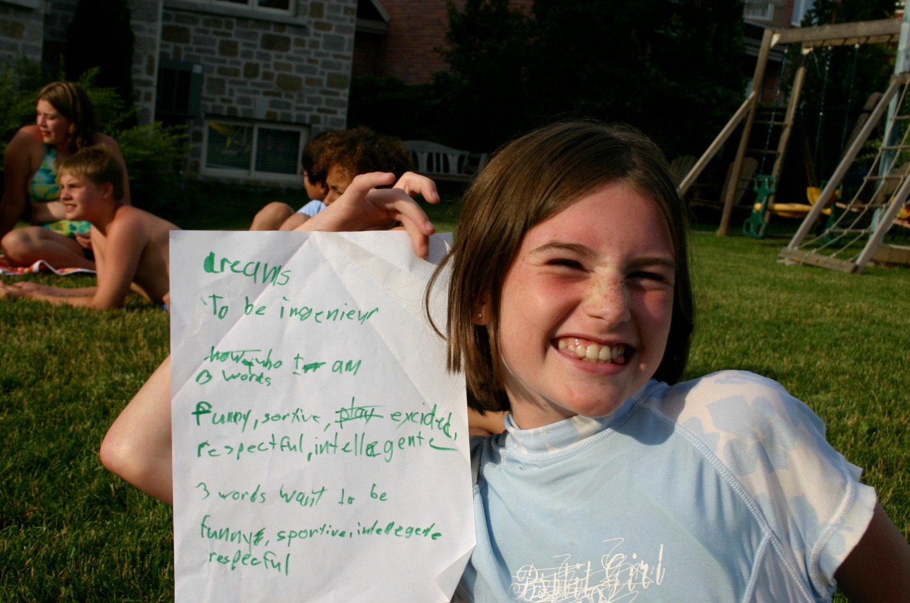
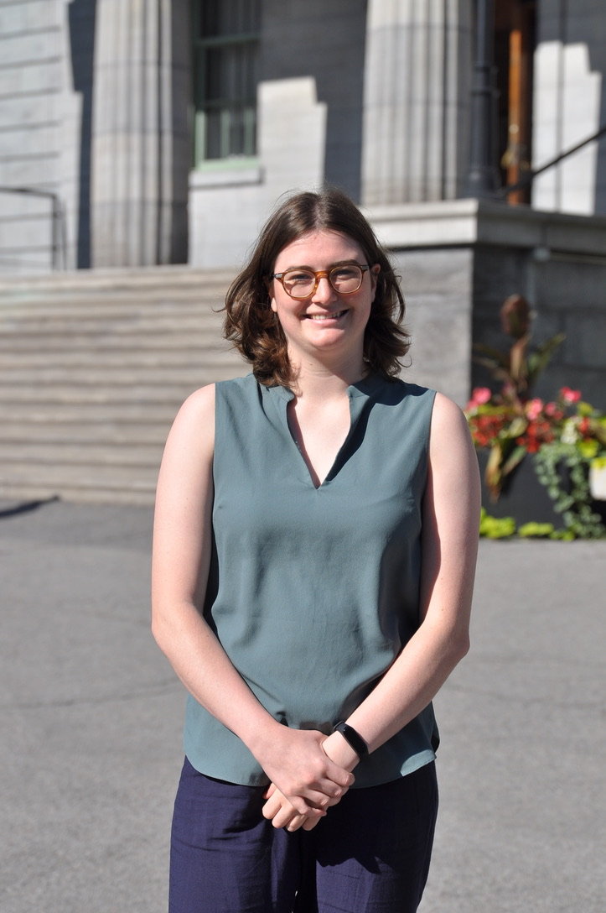
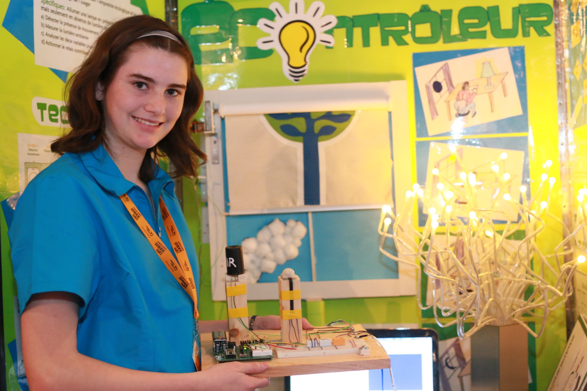
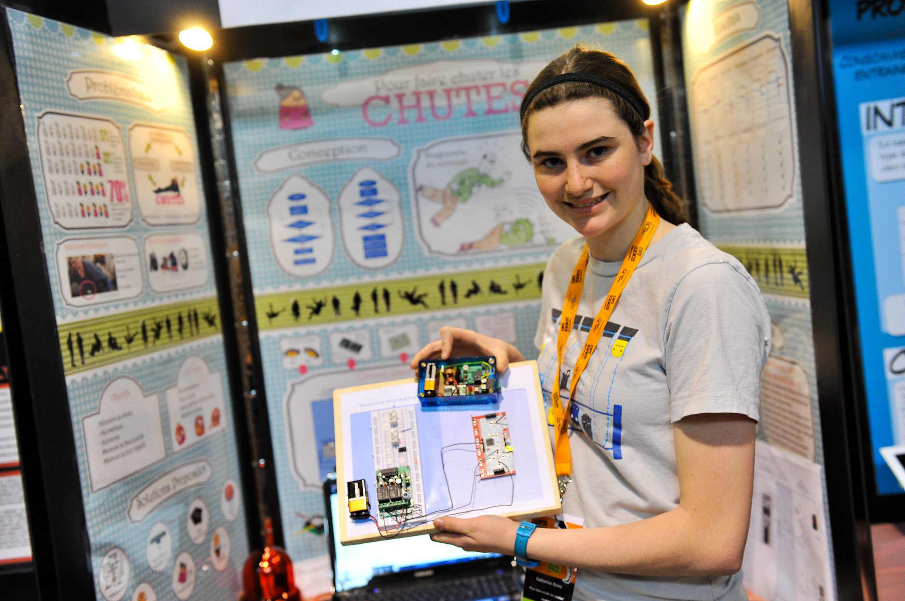
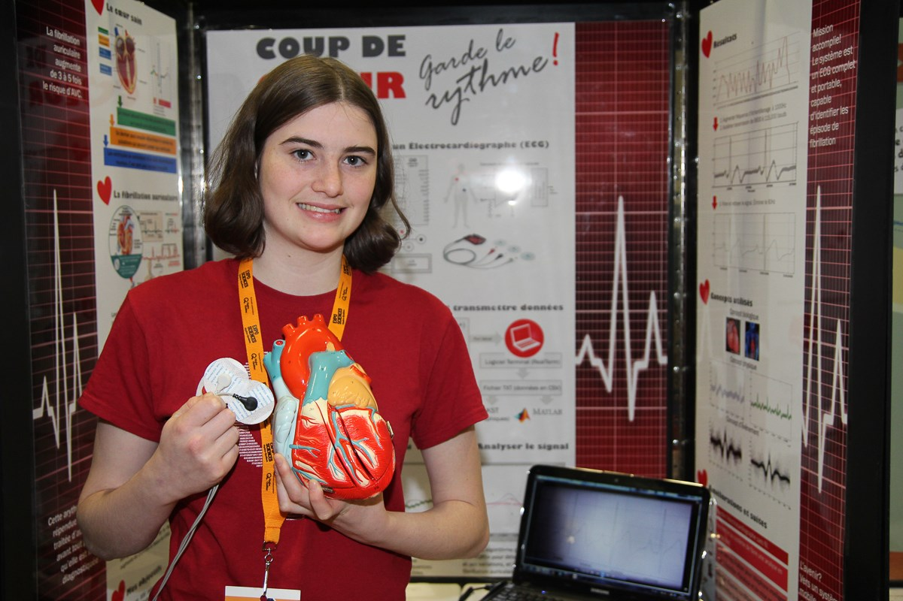
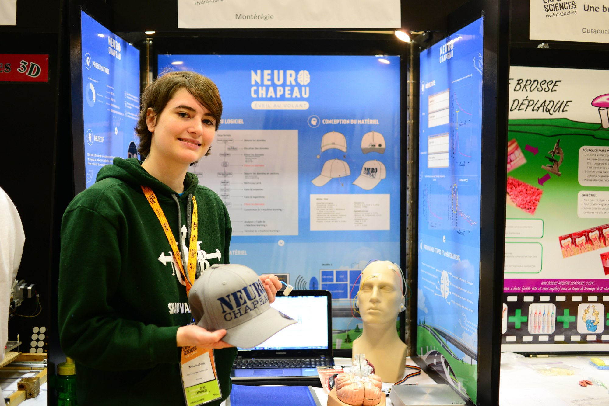
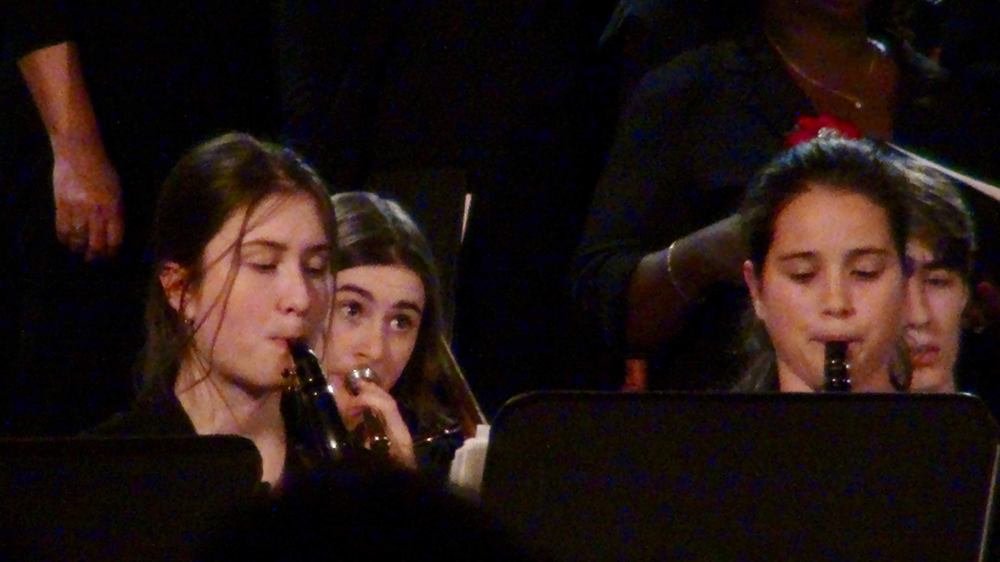

Katherine's Portfolio
This is my portfolio. You can go check out my LinkedIn here, my Github here, or my personal website (where I try to talk about my different hardware related experiences and give step by step guides to some cool gadgets I built) here.
Here is a little about myself and my projects. Enjoy!
Ever since I was a little girl, I have always wanted to be an engineer. Below is a picture of my answer to when my parents asked us to write down our dreams. I was bout 8 years old
(Ingenieur is french for engineer. I was raised speaking both English and French so "Frenglish" was my language of choice)
Now, I have just completed my third year of Computer Engineering at McGill University. It really is a dream coming true! You can see me, on the McGill campus, this past semester:
Throughout the years I haved worked on many different projects to narrow down which type of engineering I wanted to study. So I started participating in science fairs. In total, I have participated in 4 different competitions competing at different levels from regionals to nationals.

This is a picture of my first high school competition. I was 14. It was a system that detects whether or not to turn on the lights in a room depending on the movement in the room and the existing light coming from the windows. It also controlled the blinds of the room to allow for maximum lighting.

This is my second project at 15. It was a system that checks if an elderly person living at home alone has fallen and hasn't gotten back up. It then alerts the designated person (family member or caregiver)

The following year, I created a system, including a small portable ECG, that can analyse someone's heart signal and determine if they have artirial fibrillation (the most common heart arythmia in Canada)

My final project used brainwaves acquired from an EEG integrated in a baseball cap to determine if a driver is falling asleep at the wheel before any of the physical symptoms appear. The system then sounds an alarm to wake the driver up
Since then, I started a Technology Discovery Camp so that students aged 11 to 15 can learn all about electronics and programming through hands on projects and visits to tech companies in their region.
Other interests
I have also gotten the opportunity to travel a lot in my life. I have visited 23 countries and am only 22 years old. My goal is to always try to keep the number of countries I have visited higher than my age. COVID is making that hard this year.
I also enjoy staying active by partcipating in many different sports!
Finally, during my last years of high school, I was in my school's philharmonic orchestra. I played the trumbone in school for 5 years and in the orchestra for 3. Here is a picture, you can see me a little in the back.
I belive in positive thinking. It can get you through very difficult times. If you need a littel extra inspiration today, here are some of my favourite quotes about always trying and not being afraid to be a little different: